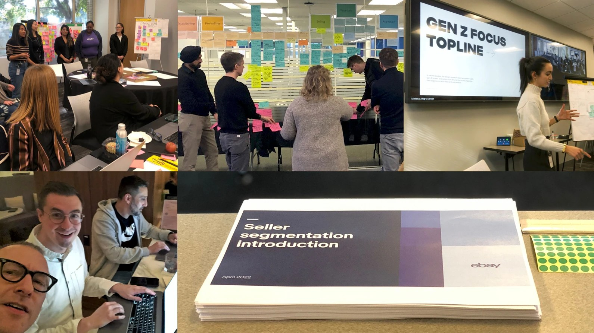
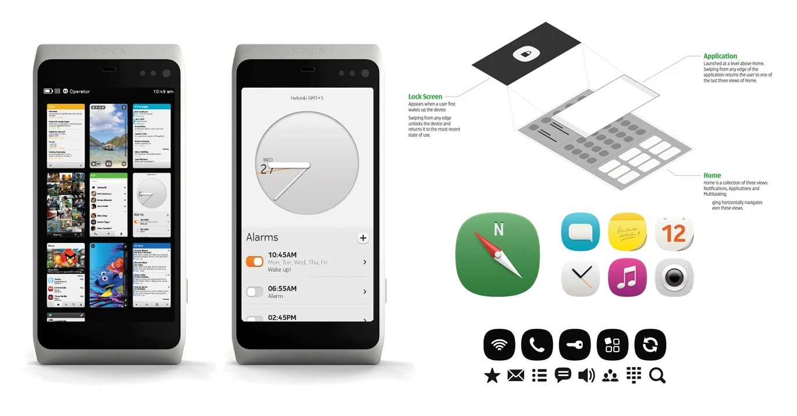
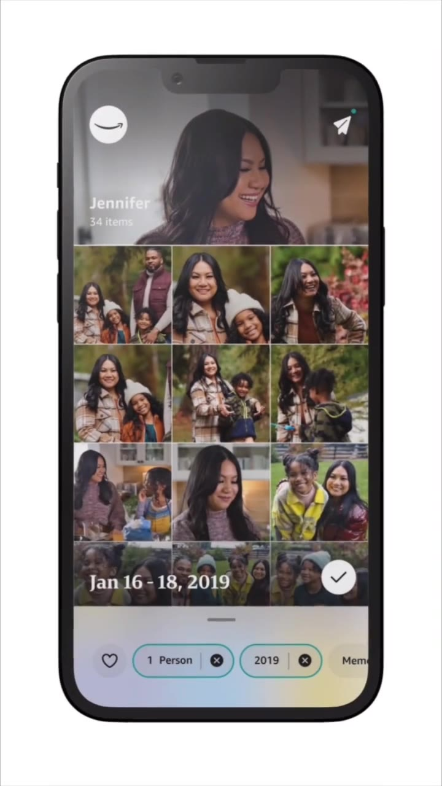
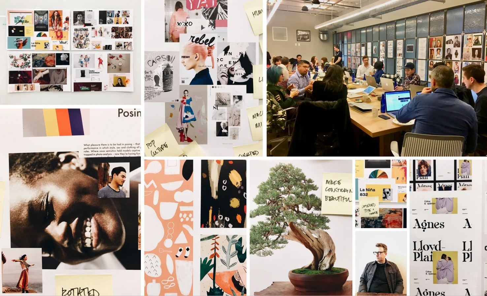
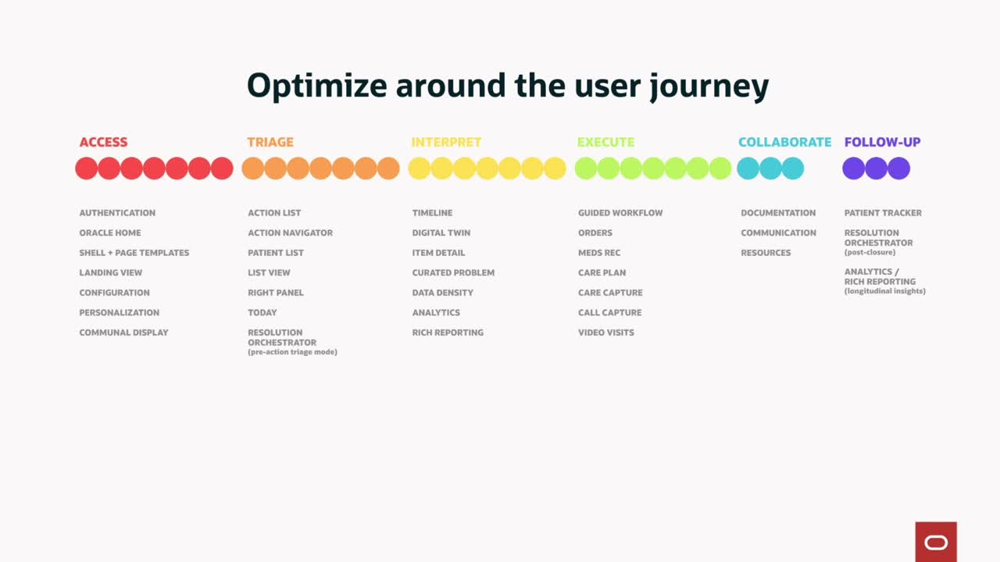
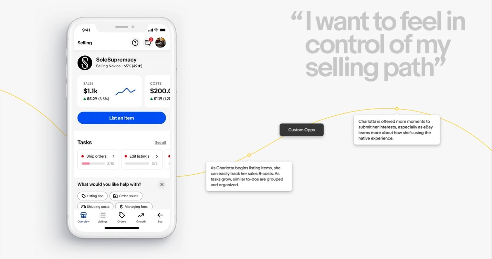
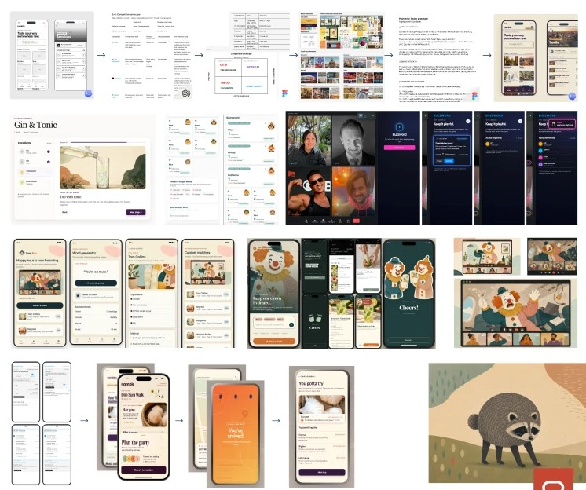
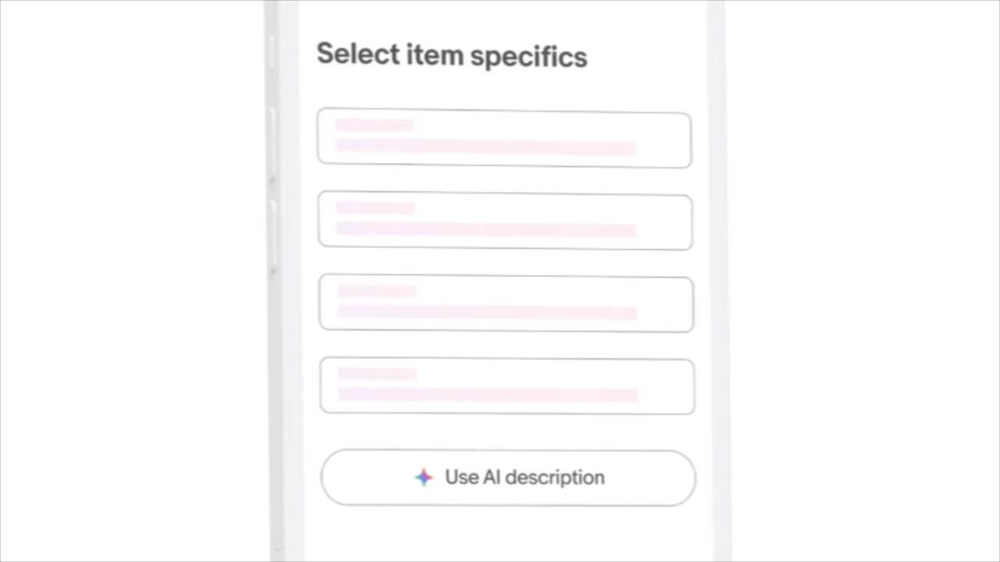

Five habits I bring to every team. Under each one, the places it showed up and what it did. The full cases are at the bottom.
Habit 1
What I expect from the team and what they can expect from me. Written, shared, revisited.

eBay, 2022 to 2024
25 designers, 2 researchers, 2 design program managers.
Seller experience end to end on a $73B marketplace. Design got into Product's six-month planning cycle, shaping roadmaps before they were set.

Nokia, 2009 to 2012
About 35 people across five cities, managing managers.
The MeeGo design system and third-party app guidelines, run as one program from five offices.
Habit 2
So the hard conversations happen once, and three orgs decide from one set of criteria.

Amazon Photos, 2019 to 2022
Project Cooper: CSAT 61% to 78% in six months.
Tenets agreed with Dev and PM before the teardown. We will not ship our org structure. Functional is not lovable.

Amazon Fashion, 2015 to 2019
Three design teams, one fashion experience.
Shared tenets pulled my team, marketing design, and Shopbop design into one experience across Amazon.
Habit 3
Layouts kept misaligning because nobody shared one. So I wrote it.
Habit 4
Every designer has something that is theirs: a stretch of the journey, not a pile of components.

Oracle Health
Thirty-four patterns, grouped by the clinician's journey.
Access, triage, interpret, execute, collaborate, follow up. Ownership followed, then the team.

eBay
Seller narratives as the org and planning lens.
Starting, Running, Growing my business. Three personas, journeys overlaid to find shared territory.
Habit 5
The toolchain is changing. I want to understand it before I ask the team to.

Oracle Health
I wrote the first skills myself. Then the skill test.
Three agents, same prompt, with and without the skill. Concept to testable prototype went from weeks to days.

eBay
eBay's first generative AI feature, concept to launch.
The Magical Listing Tool. 30% of daily US app sellers tried it in the first weeks; 95%+ kept the draft.
(415) 606-1720